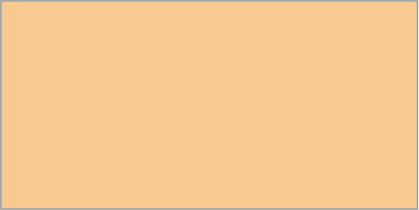
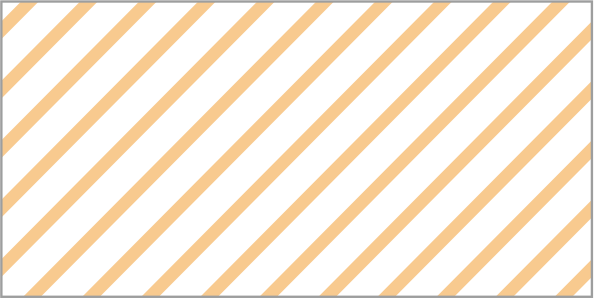

Галицько-Волинська держава (ХІІІ – ХІV ст.): формування та устрій
Галицько-Волинська держава
|  | межа Галицько-Волинської держави (XIII - XIV ст.) |
|  | території, які в ті чи інші часи входили до складу Галицько-Волинської держави |
Межі та кордони
| кордони державних утворень |
| межа території, що входила до складу Галицько-Волинської держави |
 | межі земель-князівств |
Міста
 | столиця держави |
| центри земель-князівств |
| центри удільних князівств |
| інші населені пункти |
Примітка. уточнення щодо позначень міст: Лікостомо? - непевна (дискусійна) локалізація об'єкта; [Кучугурське]/(Мамаїв Сарай?), Янґі-Шегр?/[Старий Орхей] - локалізація об'єкта безсумнівна, але ідентичність другої назви з першою чи першої з другою викликає сумніви; Хмелів?/Городок-на-Черемоші? - локалізація об'єкта дискусійна, як й ідентичність другої назви з першою.